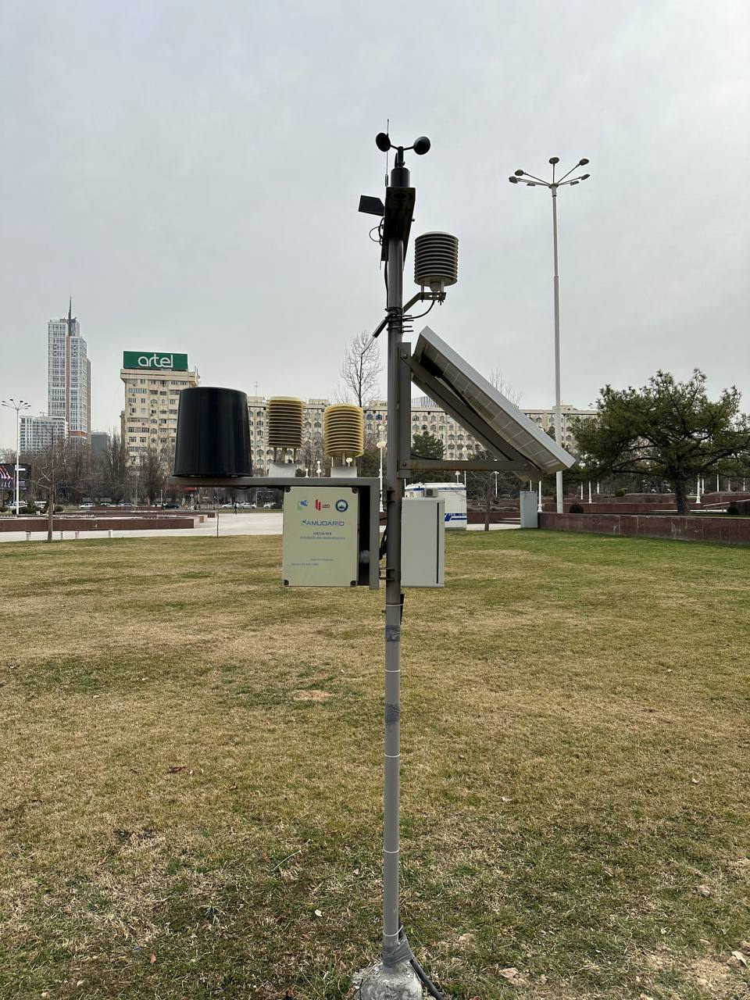
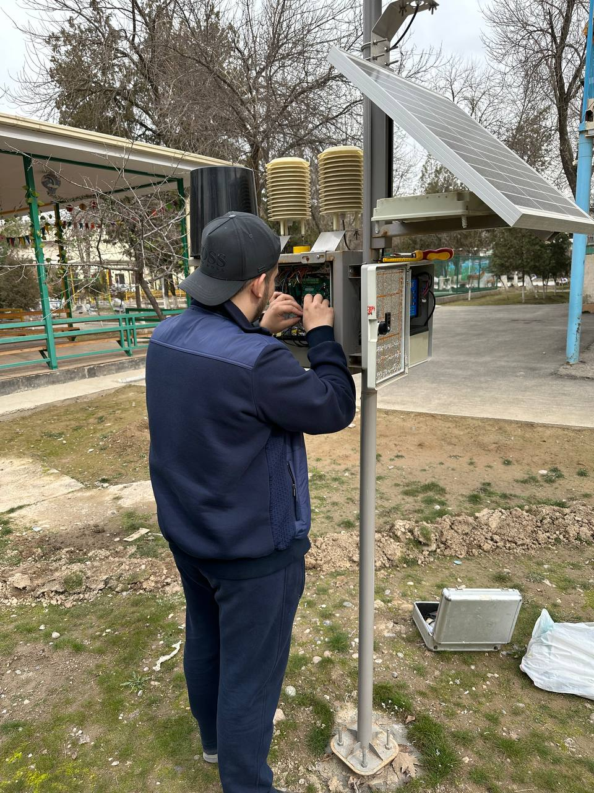
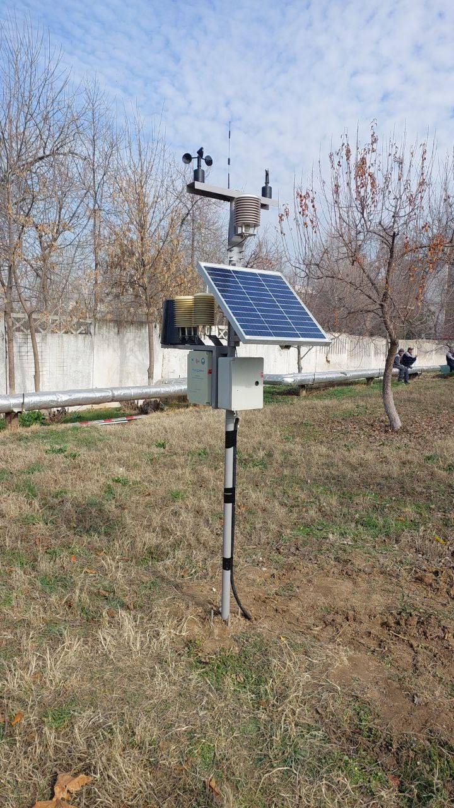
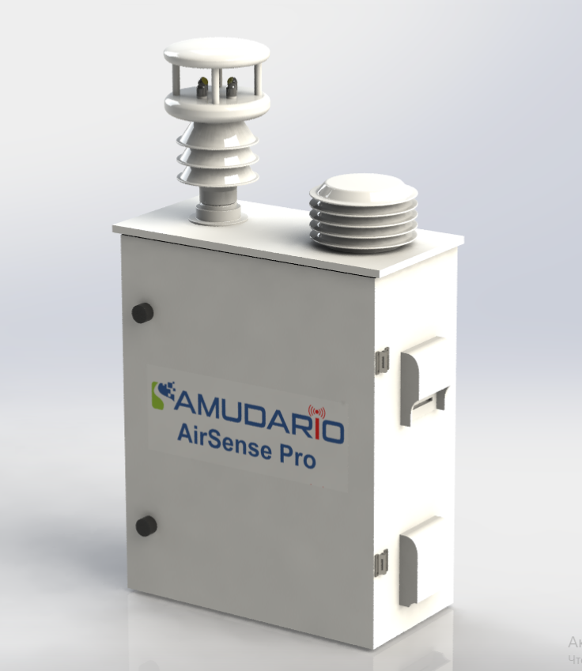
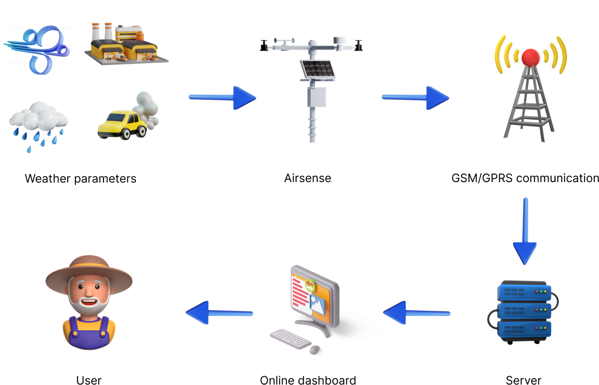
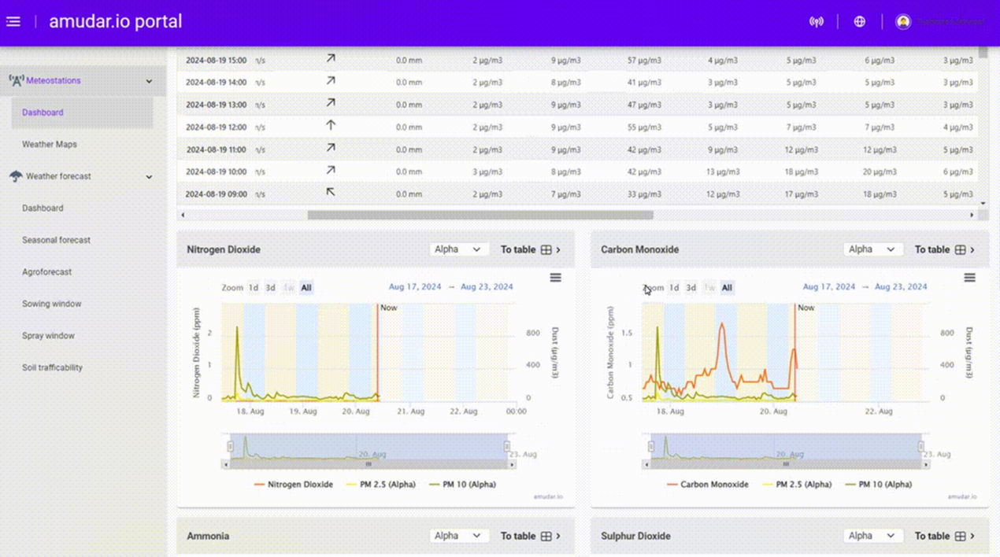
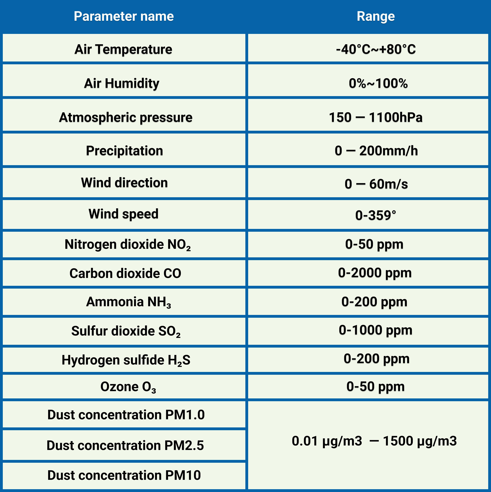

Gallery
AIRSENSE deployments





Smart air quality monitoring station with PM2.5, PM10, CO₂, SO₂, and VOC sensors — designed for urban, peri-urban, and agricultural zones.
Air pollution is an invisible threat to public health, agriculture, and the environment — monitoring is the first step to action.
Cities in Central Asia face hazardous air quality levels, especially during winter heating season.
Vehicle exhaust is a major source of PM2.5 and NOx, impacting millions in urban corridors.
Without monitoring, citizens have no data to protect themselves from hazardous air quality days.
OXUS AIRSENSE measures a wide range of pollutants and environmental parameters for complete air quality assessment.
Laser-based particulate matter sensors for accurate real-time fine dust measurement.
CO₂, SO₂, NO₂, and VOC sensors for comprehensive atmospheric gas analysis.
Temperature, humidity, and pressure sensors for complete meteorological context.
Automatic Air Quality Index calculation following international standards (EPA, WHO).
Real-time data synced to the cloud with historical analysis and trend visualization.
Automated notifications when pollutant levels exceed safe thresholds for public safety.

OXUS AIRSENSE continuously samples ambient air through precision intake ports, analyzing it with an array of electrochemical and laser-based sensors. Particulate matter (PM2.5, PM10) is measured using light-scattering technology, while gas sensors detect CO₂, SO₂, VOC, and other pollutants. Data is processed on-device and transmitted via 4G to our cloud platform where it is combined with weather data and satellite imagery for comprehensive air quality analysis. Results are displayed on public dashboards and mobile apps, with automated alerts for hazardous conditions.





The OXUS AIRSENSE dashboard delivers actionable air quality intelligence to cities, communities, and agricultural operations.
OXUS AIRSENSE is housed in a compact, weather-resistant enclosure designed for permanent outdoor installation. The station integrates multiple sensor types — laser particle counters for PM2.5/PM10, NDIR sensors for CO₂, electrochemical cells for SO₂ and NO₂, and photoionization detectors for VOCs. A built-in heating element prevents condensation in cold weather. The system communicates via 4G/Wi-Fi and runs on solar or mains power. Automated self-diagnostics ensure consistent measurement accuracy over time.

Contact us to deploy OXUS AIRSENSE in your city, campus, or agricultural region.